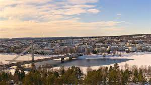

Rovaniemi on Lapin maakunnan maakuntakeskus, joka sijaitsee pohjoisen napapiirin tienoilla. Rovaniemi on maailmalla tunnettu Joulupukin kotina, joka on levinnyt varskinkin nuorten ihmisten keskuudessa suuresti. Rovaniemi on erinomainen matkustuskohde talvisin, mikäli haluaa nähdä ja kokea suomailaista kantakulttuuria, ja nähdä millaista elämä on niinkin pohjoisessa kuten rovanimi. Rovanimi on täydellinen paikka matkustaa jos haluaa päästä laskettelemaan, Rovaniemen tuntureilla ja ylängöillä on hyvät mahdollisuudet päästä laskettelemaan luonnon sekaan.
Rovaniemen luonnonkuvaan kuuluu vahvasti pohjoisen eläimistö sekä kasvillisuus. Rovaniemellä matkastellessa saatat nähdä luonnossa eläviä poroja, hirviä, susia, karhuja ja monia muita luonnon asukkeja, joita et välttämättä näkisi missään muualla. Rovanieminen luonto mahdollistaa talvisin hyvät mahdollisuudet talvisille retkille luonnon ääreen, lumikenkä vaelluksiin, valjakko ajeluihin tai jopa moottorikelkka ajeluihin. Kesäisin on mahdollista lähteä opastetulle vaellukselle luonnonhelmaan, jossa pääset näkemään keisäisen lapin.
